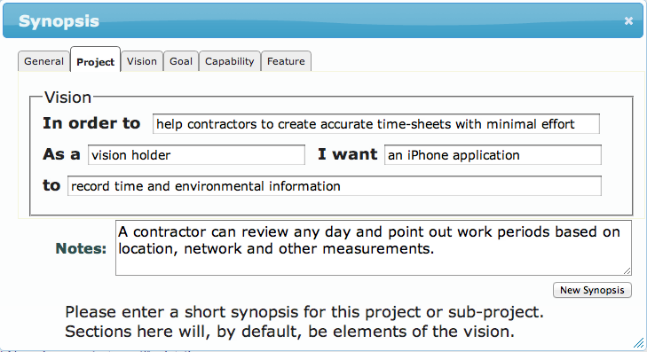
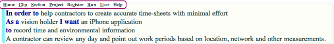
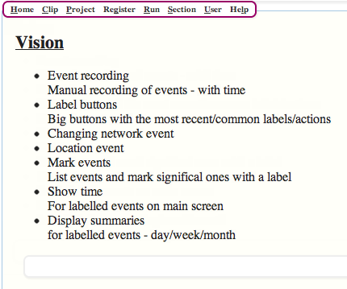
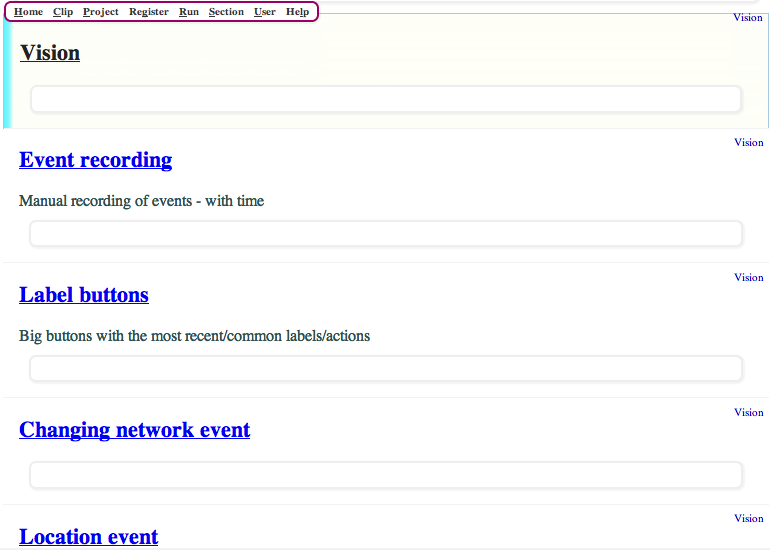

First things first, Bruce clicks on iBundy in the navigator. And up pops a for to fill in for the synopsis. As an owner developer, Bruce is using uSDLC as a sophisticated TDD (test driven development) tool, so design details don't hold much interest. But, for the fun of it he fills in this form.

Which results in this synopsis:

Given the risk of loss through forgetfullness, the best thing is to list them as the arise - the famous back of a napkin scenario. Actually Bruce use the Notes application on his iPhone. Does that make the iPhone the 21st century napkin? The process was relatively painless. Because Bruce is an owner-developer, the notes only need be meaningful to him. For larger teams they need to be more detailed.
Hint: Bruce doesn't have to record everything - and it does not need to be in a logical order. It is primarily a brain-dump. It may be labelled vision, but the list will also include benefits and features. Bruce could sort it out later, but for an owner developer this is optional as only he or she need understand it.
Hint: Keep the first line short as this will be a title. Use Ctrl-Enter to put more detail on subsequent lines.

Bruce types SSS to break the vision points up into separate sections with links to child vision pages. He will delete the first section (SD) as it is not a valid vision point.
